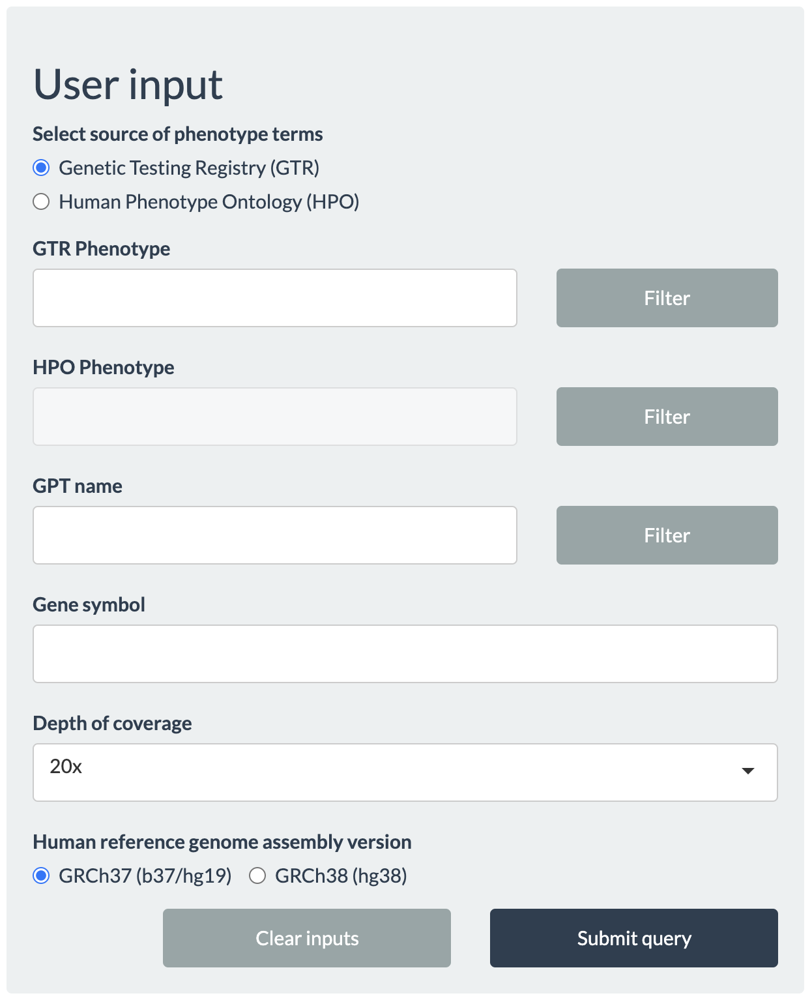
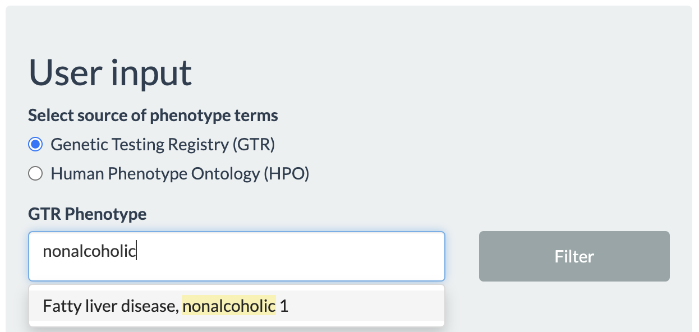
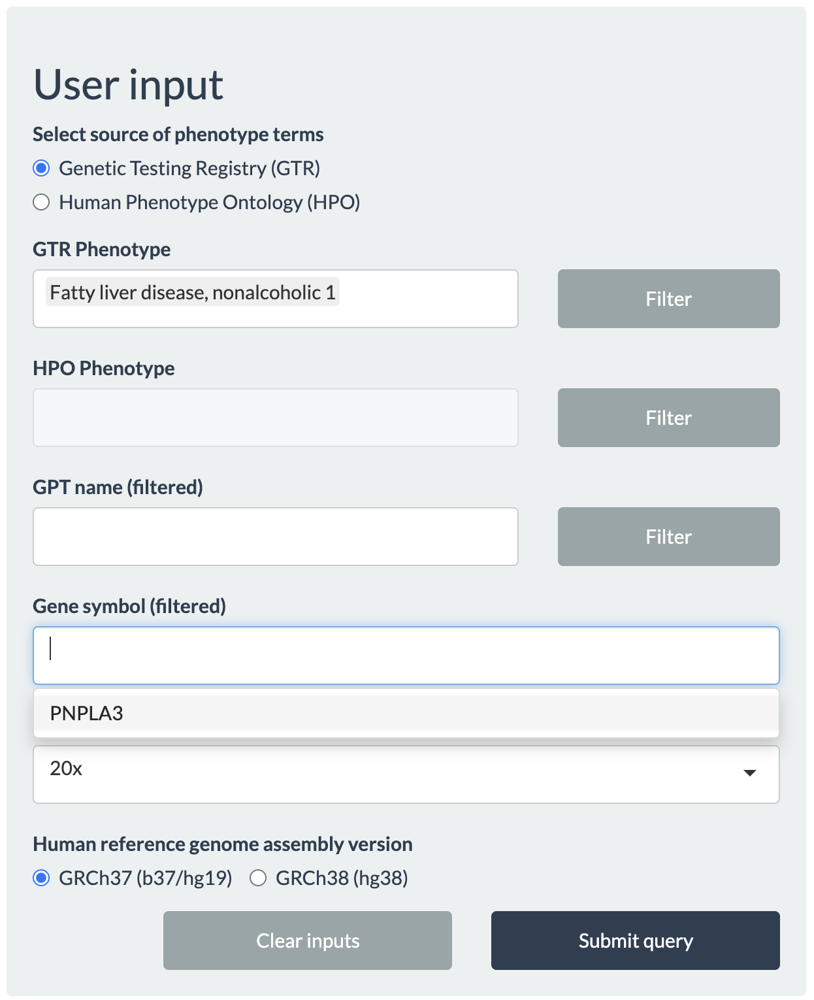
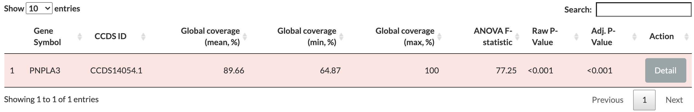
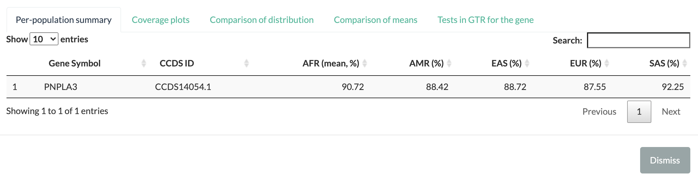
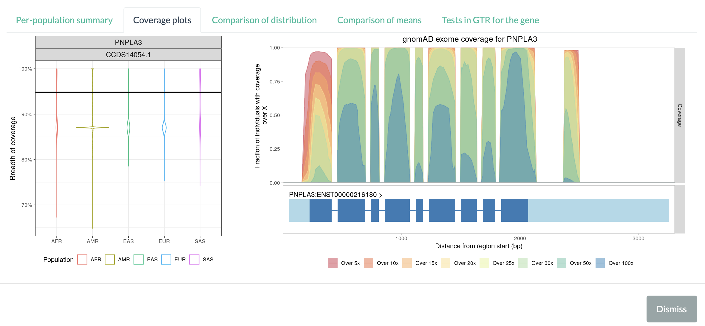
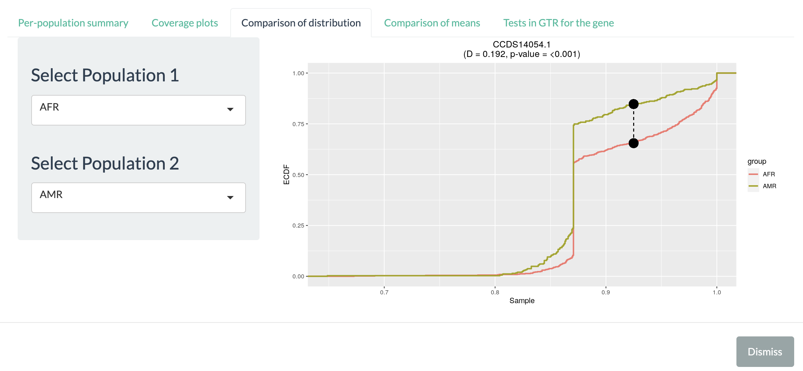

3. Using WEScover to check coverage of genes by WES¶
3.1. User input¶
{kind=link}
From the User input panel, queries can be made either by the phenotypes (additionally combined with the names of gene panel tests (GPT) for the phenotype), or by gene symbols.
Users will be prompted with an autocompleted list of valid values upon clicking any text area, so that users can quickly navigate and find their search terms. In the interest of speed, however, only a limited number of items are available in the autocomplete list. Even if the intended term does not appear in the beginning, continued typing will make the matching term appear eventually. Queries for phenotypes (or disease conditions) can be made either using the phenotypes in GTR (select Genetic Testing Registry (GTR)), or using the standardized terms in Human Phenotype Ontology (HPO) (select Human Phenotype Ontology (HPO)).
{kind=link}
Choosing the phenotype of interest and pressing the filter button next to phenotypes will search the database for all GPTs related to the given phenotype, which will be seen in the autocomplete list for GPT name. Clicking the Filter button next to GPT name will update the autocomplete list for Gene symbol with all genes that are targeted by the selected GPTs. If GTP is not selected, the value list for Gene symbol will be populated by any genes related to the selected phenotype.
Next, the minimum per-locus read depth for breadth of coverage (Depth of coverage) needs to be choosen: 5x, 10x, 15x, 20x, 25x (default), 30x, 50x, or 100x.
Finally, users need to select the Human reference genome aseembly version by which exomes were processed: GRCh37 (b37/hg19) (default) or GRCh38 (hg38).
{kind=link}
Alternatively, users can start querying arbitrary gene(s) of interest without specifying specific phenotypes.
Following the example described previously, users may type Fatty liver disease, nonalcoholic 1, as seen in GTR, under GTR Phenotype then click the Filter button to return all genes associated with this phenotype. In this example, only PNPLA3 will be listed for Gene symbol. After setting other inputs, click Submit query button to proceed.
To reset all inputs and start over, click Clear inputs.
3.2. Table¶
clicking Submit query button generates a table summarizing the breadth of coverage for each transcript (identified by their Consensus Coding Sequence identifier, CCDS ID) as shown below:
{kind=link}
Gene Symbol: the official symbol for the gene by HUGO Gene Nomenclature Committee <https://www.genenames.org> (HGNC).
CCDS ID: the unique accession identifier in the CCDS project for the transcripts of genes.
Global coverage: reports the mean, minimum, and maximum breadth of coverage (in percentage) in three separate columns. These values summarise the range and distribution of values among all exomes in 1KGP (N=2,504) as a whole. Mean values by population groups are provided in the Details section. Each row in the table is colored based on the global mean value: grean for global mean breadth of coverage greater than 99%, yellow for values between 99% and 95%, and red for any values less than 95%.
ANOVA F-statistic: reports the F-statistic for a one-way ANOVA test to compare the means between the five population groups in 1KGP. The null hypotesis in ANOVA test was that all samples were drawn from a distribution with the same mean values (i.e., no difference across populations).
Raw P-Value: the unadjusted P-value from the ANOVA test.
Adj. P-Value: the P-value adjusted for false discovery rate (FDR) of 5%.
Action column has a Detail button that opens a pop-up window to show population summary, coverage plots, comparison between populations, and gene panel tests for the gene.
Given that the global mean breadth of coverage for PNPLA3 is less than 95% (also indicated by the red background color in the table), it is advised to check additional information by clicking Detail button.
3.3. Details window¶
The new pop-up window consists of multiple tabs with different information for the selected gene.
Per-population summary reports the mean breadth of coverage for each CCDS ID by each of the five population groups in 1KGP: African (AFR), American (AMR), East Asian (EAS), European (EUR), and South Asian (SAS). This information may be used to highlight differences in coverage between different populations. For example, exons that are comprehensively covered by WES in Europeans may have a lower mean breadth of coverage in another ancestry, suggesting the use of gene panels instead (especially for non-European).
{kind=link}
Coverage plots displays two plots: the breadth of coverage distribution by each population groups in 1KGP (left) and per-locus coverage metric across genomic loci for the gene (right).
{kind=link}
The violin plot on the left shows the breadth of coverage distribution by each population groups in 1KGP. The black horizontal line marks the average per-locus coverage metric based on exomes in the Genome Aggregation Database (gnomAD), as an independant estimate from large-scale data (125,748 exomes in the release 2.1).
The second plot on the right shows coverage metric (from exomes in gnomAD browser) over genomic positions in the selected gene for the GRCh37 (b37/hg19) reference genome. The plot consists of two parts: the coverage metric over genomic positions (top) and exons and transcripts in the gene (bottom). The coverage metric is defined as the proportion of exomes in the gnomAD (y-axis) which achieved the target depth of coverage (5x, 10x, 15x, 20x, 25x, 30x, 50x, or 100x) at the given locus (x-axis). The coverage metrics at different target depths are represented by different colors: 5x (red), 10x (dark orange), 15x (orange), 20x (yellow), 25x (light green), 30x (green), 50x (greenish blue), and 100x (blue).
If the given position in the gene is well-covered in most of gnomAD exomes, the position will have high metric values (and in darker colors, too, if the position is also well-covered at higher target depths). For the PNPLA3 gene, most coding exons (except for the leftmost one) are well-covered at all depths. On the other hand, if a region is shown only in red-to-yellow colors (e.g., high percentage of exomes attained 10x coverage for the region, but very low percentage of exomes with 30x or more), or the region have low metric values over any target depths (e.g., only 5% of exomes had covered the region at any level), it indicates that the part of the gene is not well covered among exomes in gnomAD. In the above figure, the leftmost exon in PNPLA3 gene is less-covered compared to other exons.
The genes’ exon-intron structures are shown below the coverage metric plot, as a guide to identify coverage levels within the gene. The light blue blocks at either end represent the untranslated region (UTR) of the gene, while the dark blue blocks represent the exons. Introns are shown as blue lines connecting blocks. Note that the introns of the genes are scaled down to the same length to emphasize the exons. The gene model may show multiple transcripts for the gene, even if a single CCDS transcript is selected. Since coverage metric from gnomAD is based only on GRCh37 (hg19/b37), some genes picked from GRCh38 may not have a corresponding plot for gnomAD coverage metric.
Comparison of distribution allows users to visualize and to compare cumulative distribution (with Kolmogorov–Smirnov test) for breadth of coverage between pair of populations. Once the pair of population is specified on the left panel, the right part will be updated with the corresponding cummulative distributions. Two black dots connected with dashed line shows the point where the gap between two distribution is the largest. The D-statistics and p-value from Kolmogorov-Smirnov test are shown above the plot.
{kind=link}
Comparison of means shows the pairwise differences between means of breadth of coverage using the Tukey’s Honest Significant Difference test. The left triangular plot shows the estimated pairwise differences of means. The right plot shows the p-values from the significant difference test.
Tests in GTR for the gene provides a list of all gene panel tests registered in GTR that involves the selected gene. Each panel is listed by its unique accession version and provides a hyperlink to its entry in GTR when clicked. Given all genes reported by WEScover to be poorly covered by WES, users may browse these panels and read their entries in GTR to learn how to gain access to these tests.